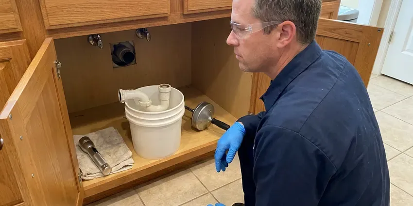

Commercial Plumbing in Utica, NY
For all your company's plumbing needs in Utica, NY, HCL Plumbing provides comprehensive commercial plumbing services.
- After-Hours Scheduling
- Local New York Experts
- Maintenance Contracts Available
- Quick Commercial Service
Keep Your Business Open and Running in Utica, NY.
Contact us for skilled plumbing solutions matched to your commercial property's unique requirements.
Responsive Commercial Plumbing That Limits Downtime in Utica, NY
HCL Plumbing specializes in complete commercial plumbing services built for businesses across Utica, NY. We understand that commercial plumbing systems are complex and critical to your daily operations, requiring specialized tools and expertise beyond residential work.
Our expertise includes:
- Commercial drain cleaning and high-pressure jetting
- Grease interceptor maintenance and high-pressure hydro jetting of kitchen lines
- High-efficiency commercial water heater repair and replacement

Additional Plumbing Maintenance Services in Utica, NY
Our maintenance and specialty plumbing services in Utica, NY catch small problems before they become emergencies.


Customers
Why Choose HCL Plumbing for Commercial Plumbing in Utica, NY?
Choosing the right commercial plumbing partner in Utica, NY is crucial for your business's continuity. Our team is equipped with specialized tools and knowledge to address the larger scale and complexity of commercial systems.
- Minimal Downtime, We schedule disruptive work before opening, after closing or over the weekend.
- 24/7 Availability, Commercial plumbing emergencies don't wait for business hours, so neither do we. Our team is on call to handle critical problems anytime.
- Code Compliance, All our commercial plumbing work strictly adheres to local Utica codes and New York regulations, ensuring safety and legality for your business.
Citywide Coverage
Our deep roots in Utica mean we have a close understanding of the local commercial infrastructure and common plumbing challenges. We offer prompt, reliable service across all of Utica to keep your business operations smooth.
Experienced Team
Each technician has worked in restaurants, medical facilities and multi-family buildings. They understand health codes, tenant concerns and the pressure of keeping a business open.
Safety-First Approach
We follow commercial plumbing codes, backflow requirements and health department rules for food service sites. Our crews use lockout procedures and proper confined space practices when needed.
Trusted Certified Utica Plumbing Services Professionals
At HCL Plumbing, we take pride in providing licensed, certified plumbing services throughout Utica, NY. Backed by leading industry credentials, our experienced plumbers combine technical skill with genuine customer care. Whether it is repair, installation, or maintenance, we follow strict safety and quality standards to deliver lasting results you can trust.
Call Us Now PHCC Plumbing Contractor Recognition
PHCC Plumbing Contractor Recognition Better Business Bureau (BBB) Accreditation
Better Business Bureau (BBB) Accreditation Angi Certified Pro
Angi Certified Pro ISO 9001 Quality Management Certification
ISO 9001 Quality Management CertificationTrusted Commercial Plumbing Services in Utica, NY
Backflow Prevention Device Services in Utica
Backflow prevention devices are critical for protecting the public water supply from contamination, a serious concern for commercial properties in Utica. Most water providers require annual testing and certification of these devices. Our certified plumbers provide complete testing, repair, and installation of backflow preventers, ensuring your business remains compliant and safe. We handle all types, including reduced pressure zone (RPZ) assemblies and double check valve assemblies, which are common in commercial and industrial applications. Keeping these devices in good working order is a basic safety measure.

Commercial Pipe Repair & Repiping in Utica, NY
Commercial properties in Utica, especially older buildings, often face issues with aging plumbing infrastructure, including leaks, corrosion, and burst pipes. We provide expert pipe repair, using durable materials like copper, PEX, and various grades of PVC, suitable for commercial demands. For extensive damage or frequent problems, repiping might be necessary to upgrade your system and prevent future disruptions. Our team can assess your current piping, identify weak points, and recommend the most cost-effective and durable solutions for your business.
Commercial Drain Cleaning & Hydro-Jetting in Utica
Commercial drains handle significantly higher volumes and different types of waste than residential ones, leading to more frequent and stubborn clogs. Our services include powerful hydro-jetting, which uses high-pressure water streams to scour pipe interiors, removing grease, sludge, and debris that accumulate in commercial kitchens and restrooms. This method is very effective for maintaining the large diameter pipes typical in commercial settings and preventing costly backups in Utica, NY. We service all types of commercial properties, from restaurants to retail stores.
Commercial Leak Detection & Repair in Utica, NY
Even small leaks in a commercial setting can lead to serious water damage, mold growth, and high utility bills. HCL Plumbing utilizes advanced leak detection technology, such as acoustic sensors and thermal imaging, to pinpoint hidden leaks in walls, ceilings, and underground pipes without destructive exploration. Once located, our experienced plumbers perform efficient and durable repairs to restore the integrity of your commercial plumbing system in Utica, NY.
Emergency Commercial Plumbing in Utica
A plumbing emergency can halt business operations, leading to lost revenue and potential property damage. HCL Plumbing offers fast-response emergency commercial plumbing services throughout Utica, NY. Whether it's a major burst pipe, a severe sewage backup, or a critical water heater failure, our team is equipped to handle urgent situations 24/7. We arrive promptly, assess the problem, and put in place immediate solutions to limit damage and restore functionality, helping your business get back on track with minimal downtime.
Commercial Water Heaters and Boilers in Utica, NY
Commercial kitchens, gyms and multi-family buildings need large amounts of hot water. We service and install high-input tank water heaters, tankless racks and boiler-fed systems with storage tanks. Private wells serve a large share of rural homes, and they can carry iron, sulfur or hardness that stains fixtures and clogs filters. Mineral scale can build up in these systems quickly, so we offer descaling and flushing on a schedule. We also install mixing valves to deliver safe temperatures at hand-washing sinks.
Commercial Drain Cleaning in Utica
HCL Plumbing offers specialized commercial drain cleaning services to keep your business's plumbing flowing freely. We use industrial-grade equipment like hydro-jetting machines, which use high-pressure water to scour the inside of pipes, thoroughly removing grease, food waste, and other common commercial blockages. This method is far more effective than traditional snaking for large-diameter commercial lines and delivers a thorough clean, preventing recurring clogs that can disrupt your operations in Utica.

Sewer Line Repair & Replacement for Businesses in Utica, NY
The main sewer line is essential for waste disposal at any commercial property in Utica, NY. HCL Plumbing provides complete sewer line services, including trenchless repair options like pipe lining and bursting, which minimize excavation and disruption to your business's property. We address problems like root intrusion, collapsed pipes, and severe blockages, ensuring your commercial sewer system functions efficiently and reliably.
Expert Commercial Plumbing Near Me in Utica, NY
Businesses across Utica consistently choose HCL Plumbing for their commercial plumbing needs because we are truly local and understand the specific demands of commercial properties here. Our licensed plumbers are always in the vicinity, ready to provide prompt, professional service that keeps your business running smoothly, without the long waits often associated with larger, out-of-town companies.
We are dedicated to providing quick and efficient commercial plumbing solutions across Utica, NY. Our technicians are strategically dispatched to ensure quick response times, minimizing disruptions to your business. Trust HCL Plumbing to be your accessible, trusted commercial plumbing expert, ready to serve your property with skill and precision.
HCL Plumbing at a Glance
- Licensed and insured plumbers serving Utica, NY
- Same-day appointments and 24/7 emergency response
- Upfront, flat-rate pricing before work begins
- 4.8-star rated by 520+ New York customers
Utica Map
Utica Information
- Population
- 63,607
- Area codes
- 315/585/607
- Service area
- Utica and communities within 40 miles
- Nearby
- Syracuse, Schenectady, Saratoga Springs, Binghamton
For businesses in Utica, NY, commercial plumbing handles far more daily use than a home system, so it needs sturdy parts and regular care. Long, cold winters are the biggest climate stress on New York plumbing, keeping boilers and water heaters running hard for months.
Expert Services
Trust our professionals for reliable HCL Plumbing solutions in Utica, NY.
Our Specialized Plumbing Services in Utica, NY
At HCL Plumbing, we provide a complete range of plumbing services across Utica, NY. From leak detection to full system installations, our team ensures fast, precise, and affordable service for both residential and commercial properties. Explore our core services below:


How Our Commercial Plumbing Service Process Works in Utica, NY
HCL Plumbing follows a clear, step-by-step approach to commercial plumbing, delivering effective solutions for businesses throughout Utica, NY.
Request a Quote
Call (716) 396-7101 and tell us about your property and the problem or project. We schedule a plumber or estimator at a time that fits your operation.
Assess and Propose
We inspect the system, explain options and provide a written proposal. You approve the work before we start.
Complete and Document
We finish the work with minimal disruption and test everything. You get invoices, photos and any compliance reports for your files.
Frequently Asked Questions About Commercial Plumbing in Utica
Commercial plumbing costs in Utica vary widely depending on the type and complexity of the service. A minor drain clog might range from $150 to $400, while a commercial water heater installation could be $2,000 to $10,000 or more. Repiping an entire commercial building can run into tens of thousands. We provide clear, upfront estimates after a thorough assessment.
Slow floor drains, gurgling toilets, sewer odors and repeated backups point to buildup or line damage. A camera inspection shows exactly what is going on.
HCL Plumbing stands behind the quality of our commercial plumbing work. We offer a comprehensive warranty on both parts and labor for all services performed. The specific terms of the warranty will be clearly outlined in your service agreement, providing peace of mind for your investment.
Hydro-jetting is a powerful drain cleaning method that uses high-pressure water streams to thoroughly clear commercial pipes of blockages, grease buildup, and debris. It's highly effective for commercial kitchens and other businesses in Utica that accumulate significant FOG (fats, oils, and grease), providing a much more complete clean than traditional snaking.
Yes, we install plumbing from plans, pull permits and coordinate with your general contractor. We schedule inspections to keep your opening date on track.
We service Sloan, Zurn, American Standard, Kohler, Chicago Faucets and T and S Brass fixtures. We also service Watts, Wilkins and Febco backflow devices.
Yes, HCL Plumbing understands that plumbing emergencies can happen anytime and severely impact your business operations. We offer 24/7 emergency commercial plumbing services throughout Utica, NY. You can call us anytime, day or night, and we will dispatch a technician to address your urgent plumbing problem promptly.
Yes, our commercial repairs and installations include written warranties on parts and labor. Manufacturer warranties apply to new equipment too.
What People Are Saying About Our Plumbing Experts?

Patricia H.
We had a slab leak that two other companies could not find. HCL Plumbing located it in under an hour, explained our options, and the price matched the quote to the dollar.
Slab Leak Repair · Saratoga Springs, NY
Daniel K.
A pipe burst at 11 pm and they actually answered. The plumber showed up within the hour, shut everything down, and had us back to normal the next morning. Could not ask for more.
Emergency Plumbing · Saratoga Springs, NY
Sofia M.
Two new toilets installed in one visit, no mess left behind, and the tech even adjusted a faucet he noticed was dripping. Fair pricing and really friendly.
Toilet Installation · Syracuse, NYLaura S.
I scheduled a water heater replacement, and the team made the process smooth and affordable. The new unit works perfectly, and they cleaned up after completing the job.
Water Heater Replacement · Glens Falls, NY
Emily R.
I called HCL Plumbing for plumbing repair, and the technician was fast, polite, and thorough. They explained the problem clearly and fixed it the same day. I will definitely hire them again. Highly recommended!
Plumbing Repair · Saratoga Springs, NY
Robert G.
The trenchless sewer replacement saved our front yard. They walked us through the camera inspection footage first so we knew exactly what we were paying for.
Sewer Line Replacement · Binghamton, NY